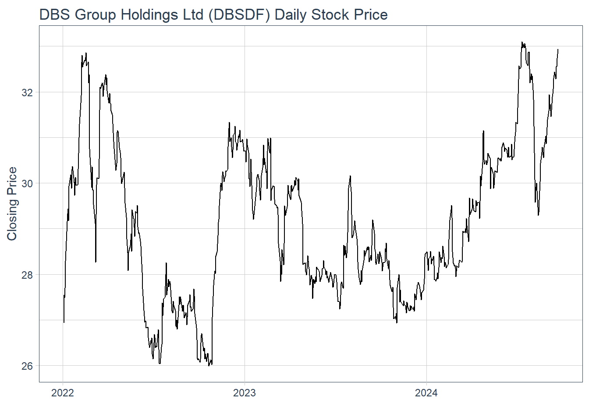
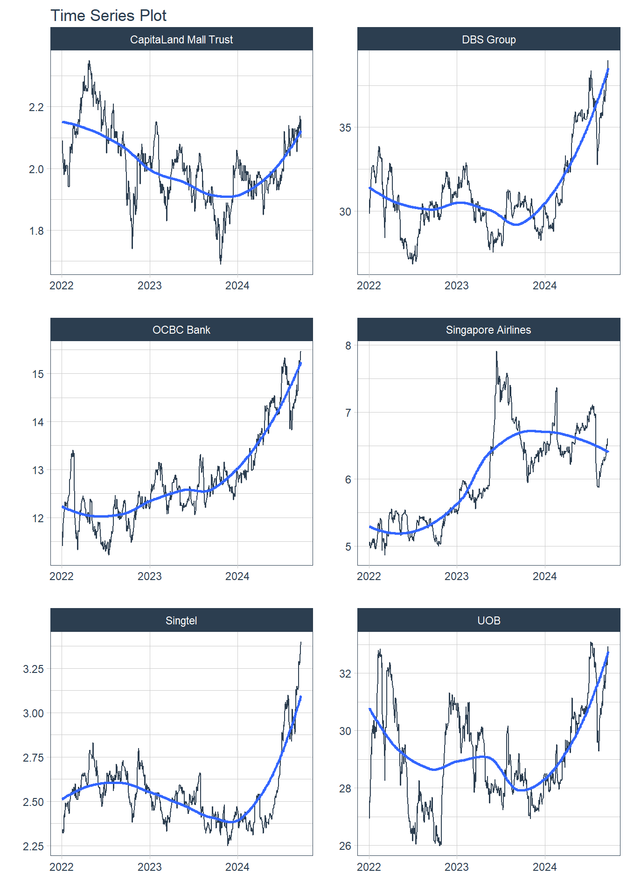
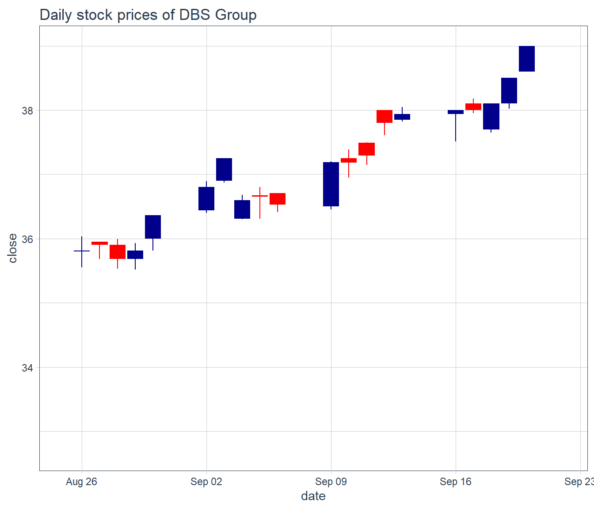
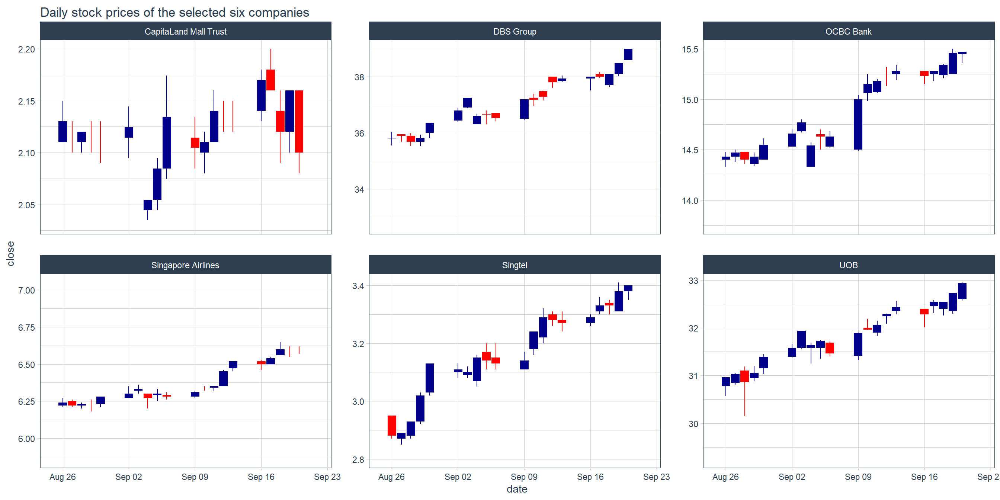
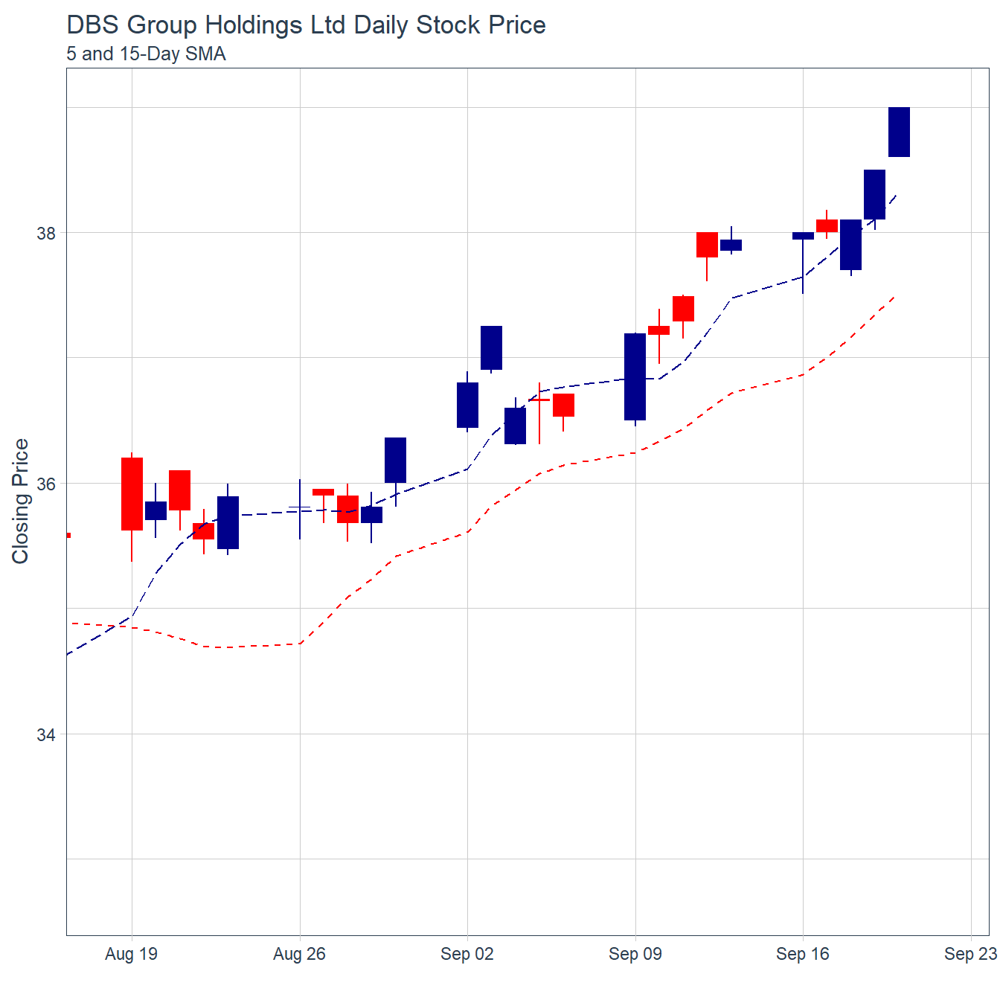
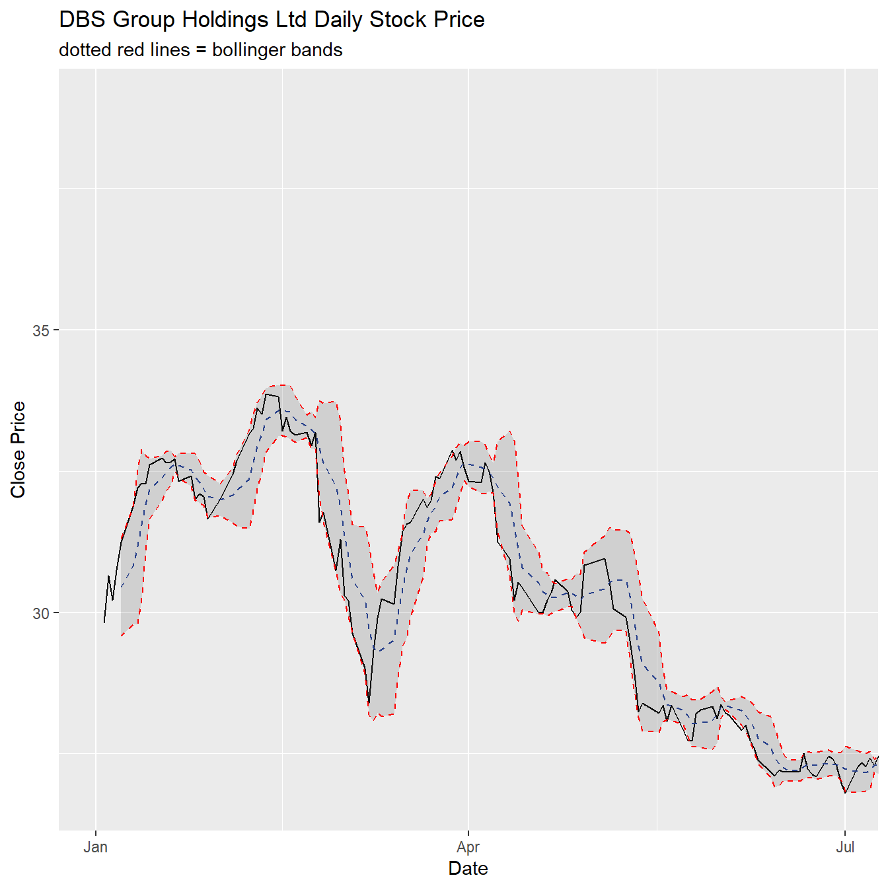
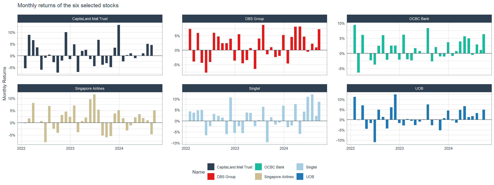
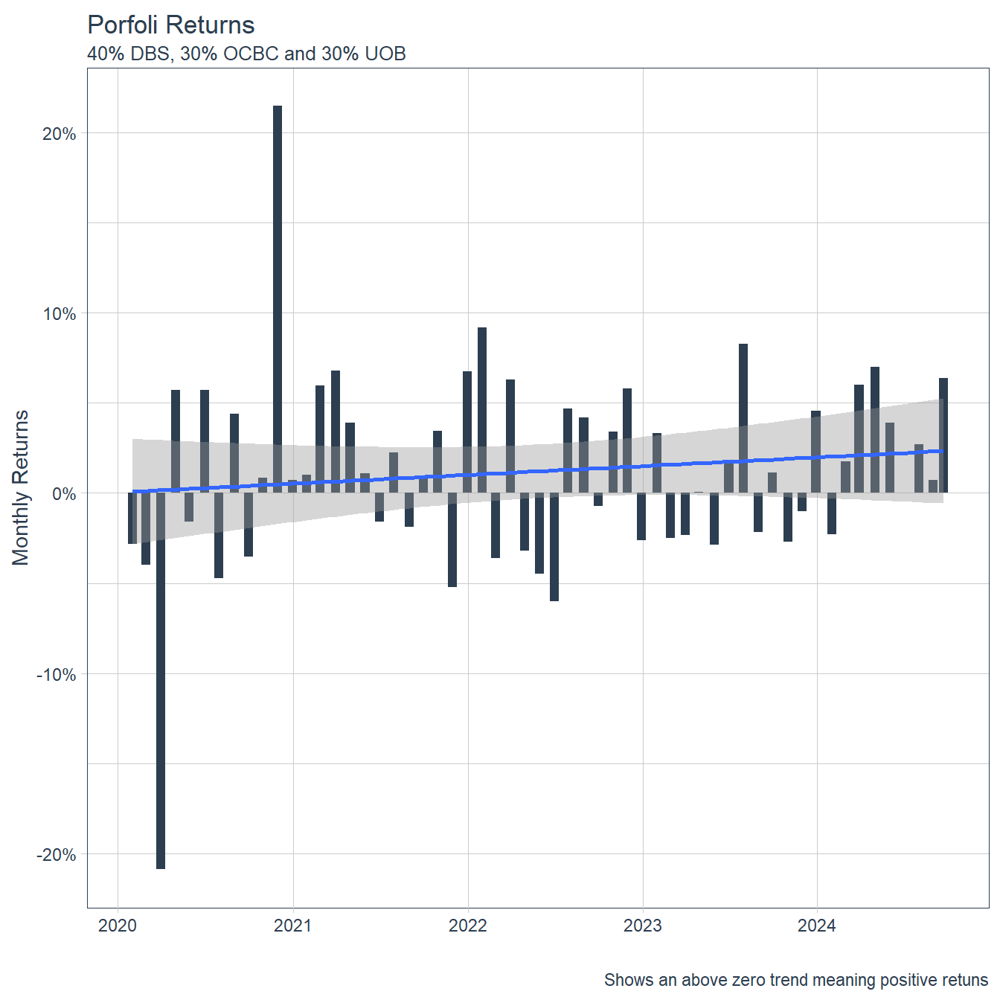
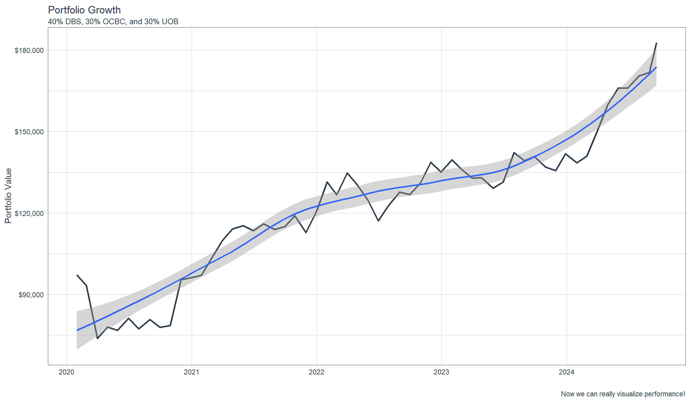

pacman::p_load(tidyquant, timetk,
tidyverse, knitr)Episode 6: Financial Data Analysis with R
Overview
In this series, we are going to explore the tidymodels approach in financial analysis. By the end of this session, you will learn how to:
- extract stock prices data from an online portal such as Yahoo Finance
- wrangling stock price data,
- performing technical analysis using ,
- conduct performance analysis
Introducing tidyquant
- tidyquant integrates the best resources for collecting and analyzing financial data, zoo, xts, quantmod, TTR, and PerformanceAnalytics, with the tidy data infrastructure of the tidyverse allowing for seamless interaction between each.
- With tidyquant, we can now perform complete financial analyses using tidyverse framework.
Installing and Laoding the R Packages into R Environment
In this session, four R packages will be used. They are: tidyverse, tidyquant, timetk, knitr.
Extracting Financial Data
Data extraction is the starting point of any financial data analysis. tq_get() is specially designed for extracting quantitative financial data from the following online portals:
Yahoo Finance - Daily stock data
FRED - Economic data
Quandl - Economic, Energy, & Financial Data API
Tiingo - Financial API with sub-daily stock data and crypto-currency
Alpha Vantage - Financial API with sub-daily, ForEx, and crypto-currency data
Bloomberg - Financial API. Paid account is required.
Importing companies data
For the purpose of this hands-on exercise, we are interested to analyse the stock prices of six companies in Singapore. The companies and related information are provided in company.csv file.
Code chunk below is used to important company.csv into R environment.
company <- read_csv("data/SGCompany.csv")Rows: 6 Columns: 3
── Column specification ────────────────────────────────────────────────────────
Delimiter: ","
chr (2): Name, Symbol
dbl (1): marketcap
ℹ Use `spec()` to retrieve the full column specification for this data.
ℹ Specify the column types or set `show_col_types = FALSE` to quiet this message.company# A tibble: 6 × 3
Name Symbol marketcap
<chr> <chr> <dbl>
1 DBS Group D05.SI 55459934603
2 OCBC Bank O39.SI 36748776904
3 UOB U11.SI 31908845153
4 Singtel Z74.SI 30399495021
5 Singapore Airlines C6L.SI 11030367619
6 CapitaLand Mall Trust C38U.SI 10479058731Extracting stock prices from Yahoo Finance
In this code chunk below, tq_get() is used to get stock prices from Yahoo Finance. The time period for the data was set from 1 January 2022 to 31 December 2023.
Stock_daily <- company %>%
select(Symbol) %>%
tq_get(get = "stock.prices",
from = "2022-01-01",
to = "2024-09-22") Wrangling stock data
Next, left_join() of dplyr package is used to append Name and marketcap fields of company tibble data frame into Stock_daily tibble data frame by using Symbol as the join field.
Stock_data <- Stock_daily %>%
left_join(company)Joining with `by = join_by(Symbol)`Technical Analysis: tidyquant methods
Technical analysis is that traders attempt to identify opportunities by looking at statistical trends, such as movements in a stock’s price and volume. The core assumption is that all known fundamentals are factored into price, thus there is no need to pay close attention to them.
Technical analysts do not attempt to measure a security’s intrinsic value. Instead, they use stock charts to identify patterns and trends that suggest what a stock will do in the future.
Popular technical analysis signals include simple moving averages (SMA), candlestick, Bollinger bands.
Plotting Stock Price Line Graph: ggplot methods
In the code chunk below, geom_line() of ggplot2 is used to plot the stock prices.
Stock_data %>%
filter(Name == "UOB") %>%
ggplot(aes(x = date, y = close)) +
geom_line() +
labs(title = "DBS Group Holdings Ltd (DBSDF) Daily Stock Price",
y = "Closing Price", x = "") +
theme_tq()
Visualising Stock Price with timetk
In the code chunk below, plot_time_series() of timetk package is used plot line graphs with trend lines.
Stock_data %>%
group_by(Name) %>%
plot_time_series(date, close,
.facet_ncol = 2,
.facet_scales = "free",
.interactive = FALSE)
Technical analysis with candlestick
A candlestick chart (also called Japanese candlestick chart or K-line) is a style of financial chart used to describe price movements of a security, derivative, or currency.
In the code chunk below, geom_candlestick() of tidyquant is used to plot the stock prices of DBS Group.
end <- as_date("2024-09-22")
start <- end - weeks(4)
Stock_data %>%
filter(Name == "DBS Group") %>%
filter(date >= start - days(2 * 15)) %>%
ggplot(aes(x=date, y=close)) +
geom_candlestick(aes(open=open,
high=high,
low=low,
close=close)) +
labs(title = "Daily stock prices of DBS Group") +
coord_x_date(xlim = c(start, end)) +
theme_tq()Warning: The following aesthetics were dropped during statistical transformation: open,
high, low, close, and y.
ℹ This can happen when ggplot fails to infer the correct grouping structure in
the data.
ℹ Did you forget to specify a `group` aesthetic or to convert a numerical
variable into a factor?Warning: The following aesthetics were dropped during statistical transformation: x,
open, high, low, close, and y.
ℹ This can happen when ggplot fails to infer the correct grouping structure in
the data.
ℹ Did you forget to specify a `group` aesthetic or to convert a numerical
variable into a factor?Warning: Using the `size` aesthetic in this geom was deprecated in ggplot2 3.4.0.
ℹ Please use `linewidth` in the `default_aes` field and elsewhere instead.
Technical analysis with candlestick
In the code chunk below, facet_wrap() of ggplot2 package is used to plot the stock prices of the selected six companies.
end <- as_date("2024-09-22")
start <- end - weeks(4)
Stock_data %>%
filter(date >= start - days(2 * 15)) %>%
ggplot(aes(x=date, y=close, group = Name )) +
geom_candlestick(aes(open=open,
high=high,
low=low,
close=close)) +
labs(title = "Daily stock prices of selected six stocks") +
coord_x_date(xlim = c(start, end)) +
facet_wrap(~ Name,
ncol = 2,
scales = "free_y") +
theme_tq()Warning: The following aesthetics were dropped during statistical transformation: open,
high, low, close, and y.
ℹ This can happen when ggplot fails to infer the correct grouping structure in
the data.
ℹ Did you forget to specify a `group` aesthetic or to convert a numerical
variable into a factor?
The following aesthetics were dropped during statistical transformation: open,
high, low, close, and y.
ℹ This can happen when ggplot fails to infer the correct grouping structure in
the data.
ℹ Did you forget to specify a `group` aesthetic or to convert a numerical
variable into a factor?
The following aesthetics were dropped during statistical transformation: open,
high, low, close, and y.
ℹ This can happen when ggplot fails to infer the correct grouping structure in
the data.
ℹ Did you forget to specify a `group` aesthetic or to convert a numerical
variable into a factor?
The following aesthetics were dropped during statistical transformation: open,
high, low, close, and y.
ℹ This can happen when ggplot fails to infer the correct grouping structure in
the data.
ℹ Did you forget to specify a `group` aesthetic or to convert a numerical
variable into a factor?
The following aesthetics were dropped during statistical transformation: open,
high, low, close, and y.
ℹ This can happen when ggplot fails to infer the correct grouping structure in
the data.
ℹ Did you forget to specify a `group` aesthetic or to convert a numerical
variable into a factor?
The following aesthetics were dropped during statistical transformation: open,
high, low, close, and y.
ℹ This can happen when ggplot fails to infer the correct grouping structure in
the data.
ℹ Did you forget to specify a `group` aesthetic or to convert a numerical
variable into a factor?Warning: The following aesthetics were dropped during statistical transformation: x,
open, high, low, close, and y.
ℹ This can happen when ggplot fails to infer the correct grouping structure in
the data.
ℹ Did you forget to specify a `group` aesthetic or to convert a numerical
variable into a factor?
The following aesthetics were dropped during statistical transformation: x,
open, high, low, close, and y.
ℹ This can happen when ggplot fails to infer the correct grouping structure in
the data.
ℹ Did you forget to specify a `group` aesthetic or to convert a numerical
variable into a factor?
The following aesthetics were dropped during statistical transformation: x,
open, high, low, close, and y.
ℹ This can happen when ggplot fails to infer the correct grouping structure in
the data.
ℹ Did you forget to specify a `group` aesthetic or to convert a numerical
variable into a factor?
The following aesthetics were dropped during statistical transformation: x,
open, high, low, close, and y.
ℹ This can happen when ggplot fails to infer the correct grouping structure in
the data.
ℹ Did you forget to specify a `group` aesthetic or to convert a numerical
variable into a factor?
The following aesthetics were dropped during statistical transformation: x,
open, high, low, close, and y.
ℹ This can happen when ggplot fails to infer the correct grouping structure in
the data.
ℹ Did you forget to specify a `group` aesthetic or to convert a numerical
variable into a factor?
The following aesthetics were dropped during statistical transformation: x,
open, high, low, close, and y.
ℹ This can happen when ggplot fails to infer the correct grouping structure in
the data.
ℹ Did you forget to specify a `group` aesthetic or to convert a numerical
variable into a factor?
Technical analysis with moving average
In finance, a moving average (MA) is a stock indicator commonly used in technical analysis. The reason for calculating the moving average of a stock is to help smooth out the price data by creating a constantly updated average price.
tidyquant includes geoms to enable “rapid prototyping” to quickly visualize signals using moving averages and Bollinger bands. The following moving averages are available:
- Simple moving averages (SMA)
- Exponential moving averages (EMA)
- Weighted moving averages (WMA)
- Double exponential moving averages (DEMA)
- Zero-lag exponential moving averages (ZLEMA)
- Volume-weighted moving averages (VWMA) (also known as VWAP)
- Elastic, volume-weighted moving averages (EVWMA) (also known as MVWAP)
Plotting the 5-day and 15-day simple moving average
In the code chunk below, geom_ma() of tidyquant package is used to overplot two moving average lines on the candlestick chart.
Stock_data %>%
filter(Symbol == "D05.SI") %>%
filter(date >= start - days(2 * 15)) %>%
ggplot(aes(x = date, y = close)) +
geom_candlestick(aes(open = open, high = high, low = low, close = close)) +
geom_ma(ma_fun = SMA, n = 5, linetype = 5, size = 1.25) +
geom_ma(ma_fun = SMA, n = 15, color = "red", size = 1.25) +
labs(title = "DBS Group Holdings Ltd Daily Stock Price",
subtitle = "5 and 15-Day SMA",
y = "Closing Price", x = "") +
coord_x_date(xlim = c(end - weeks(5), end)) +
theme_tq()Warning: The following aesthetics were dropped during statistical transformation: open,
high, low, close, and y.
ℹ This can happen when ggplot fails to infer the correct grouping structure in
the data.
ℹ Did you forget to specify a `group` aesthetic or to convert a numerical
variable into a factor?Warning: The following aesthetics were dropped during statistical transformation: x,
open, high, low, close, and y.
ℹ This can happen when ggplot fails to infer the correct grouping structure in
the data.
ℹ Did you forget to specify a `group` aesthetic or to convert a numerical
variable into a factor?
Plotting Bollinger Band: tidyquant method
A Bollinger Band is a technical analysis tool defined by a set of trendlines plotted two standard deviations (positively and negatively) away from a simple moving average (SMA) of a security’s price, but which can be adjusted to user preferences.
In tidyquant, bollinger band can be plotted by using geom_bbands(). Because they use a moving average, the geom_bbands() works almost identically to geom_ma. The same seven moving averages are compatible. The main difference is the addition of the standard deviation, sd, argument which is 2 by default, and the high, low and close aesthetics which are required to calculate the bands.
Plotting Bollinger Bands: tidyquant method
In the code chunk below, geom_bbands() of tidyquant package is used to plot bollinger bands on closing stock prices of DBS Group.
Stock_data %>%
filter(Name == "DBS Group") %>%
ggplot(aes(x=date, y=close))+
geom_line(size=0.5)+
geom_bbands(aes(
high = high, low = low, close = close),
ma_fun = SMA, sd = 2, n = 5,
size = 0.75, color_ma = "royalblue4",
color_bands = "red1")+
coord_x_date(xlim = c("2022-01-01",
"2022-06-30"),
expand = TRUE)+
labs(title = "DBS Group Holdings Ltd Daily Stock Price",
subtitle = "dotted red lines = bollinger bands",
x = "Date", y ="Close Price") +
theme(legend.position="none")Warning: Using `size` aesthetic for lines was deprecated in ggplot2 3.4.0.
ℹ Please use `linewidth` instead.Warning: The following aesthetics were dropped during statistical transformation: high,
low, close, and y.
ℹ This can happen when ggplot fails to infer the correct grouping structure in
the data.
ℹ Did you forget to specify a `group` aesthetic or to convert a numerical
variable into a factor?Warning: The following aesthetics were dropped during statistical transformation: high,
low, and close.
ℹ This can happen when ggplot fails to infer the correct grouping structure in
the data.
ℹ Did you forget to specify a `group` aesthetic or to convert a numerical
variable into a factor?
Performance Analysis with tidyquant
Financial asset (individual stocks, securities, etc) and portfolio (groups of stocks, securities, etc) performance analysis is a deep field with a wide range of theories and methods for analyzing risk versus reward. The PerformanceAnalytics package consolidates functions to compute many of the most widely used performance metrics.
tidquant integrates this functionality so it can be used at scale using the split, apply, combine framework within the tidyverse. Two primary functions integrate the performance analysis functionality:
tq_performance()implements the performance analysis functions in a tidy way, enabling scaling analysis using the split, apply, combine framework.tq_portfolio()provides a useful tool set for aggregating a group of individual asset returns into one or many portfolios.
Time-based returns analysis with tidyquant
An important concept of performance analysis is based on the statistical properties of returns (not prices). In the code chunk below, tq_transmute() to compute the monthly returns of the six stocks
Stock_monthly_returns <- Stock_data %>%
group_by(Name) %>%
tq_transmute(select = adjusted,
mutate_fun = periodReturn,
period = "monthly",
type = "arithmetic")
Stock_monthly_returns| Name | date | monthly.returns |
|---|---|---|
| DBS Group | 2022-01-31 | 0.0734980 |
| DBS Group | 2022-02-28 | -0.0392044 |
| DBS Group | 2022-03-31 | 0.0594322 |
| DBS Group | 2022-04-29 | -0.0435616 |
| DBS Group | 2022-05-31 | -0.0776210 |
| DBS Group | 2022-06-30 | -0.0407238 |
| DBS Group | 2022-07-29 | 0.0603098 |
| DBS Group | 2022-08-31 | 0.0472114 |
| DBS Group | 2022-09-30 | 0.0242332 |
| DBS Group | 2022-10-31 | 0.0242589 |
| DBS Group | 2022-11-30 | 0.0397846 |
| DBS Group | 2022-12-30 | -0.0360898 |
| DBS Group | 2023-01-31 | 0.0551296 |
| DBS Group | 2023-02-28 | -0.0452639 |
| DBS Group | 2023-03-31 | -0.0342406 |
| DBS Group | 2023-04-28 | 0.0072186 |
| DBS Group | 2023-05-31 | -0.0644846 |
| DBS Group | 2023-06-30 | 0.0399340 |
| DBS Group | 2023-07-31 | 0.0872739 |
| DBS Group | 2023-08-31 | -0.0141973 |
| DBS Group | 2023-09-29 | 0.0102103 |
| DBS Group | 2023-10-31 | -0.0234840 |
| DBS Group | 2023-11-30 | -0.0196027 |
| DBS Group | 2023-12-29 | 0.0526150 |
| DBS Group | 2024-01-31 | -0.0457946 |
| DBS Group | 2024-02-29 | 0.0454830 |
| DBS Group | 2024-03-28 | 0.0810081 |
| DBS Group | 2024-04-30 | 0.0815819 |
Visualising time-based returns
Since the output is in tibble data frame format, we can visualise the returns easily by using appropriate ggplot2 functions.
Stock_monthly_returns %>%
ggplot(aes(x = date,
y = monthly.returns,
fill = Name)) +
geom_col() +
geom_hline(yintercept = 0,
color = palette_light()[[1]]) +
scale_y_continuous(labels = scales::percent) +
labs(title = "Monthly returns of the six selected stocks",
subtitle = "",
y = "Monthly Returns", x = "") +
facet_wrap(~ Name, ncol = 3, scales = "free_y") +
theme_tq() +
scale_fill_tq()
Portfolio Analysis with tidyquant
Assuming that we have S$100,000 investment in the three local banks since 1st January 2020 until 31th December 2023 and we would like to analyse how our money is growing.
Code chunk below will be used to import SGBank.csv into R environment.
SGBank <- read_csv("data/SGBank.csv")Rows: 3 Columns: 3
── Column specification ────────────────────────────────────────────────────────
Delimiter: ","
chr (2): Name, Symbol
dbl (1): marketcap
ℹ Use `spec()` to retrieve the full column specification for this data.
ℹ Specify the column types or set `show_col_types = FALSE` to quiet this message.Next, tq_get() will be used to extract and download the stock prices from Yahoo Finance.
SGBank_daily <- SGBank %>%
select(Symbol) %>%
tq_get(get = "stock.prices",
from = "2020-01-01",
to = "2024-09-22") Computing returns of individual bank
In the code chunk below, tq_transmute() is used to compute the monthly returns for each bank.
SGBank_returns_monthly <- SGBank_daily %>%
group_by(Symbol) %>%
tq_transmute(select = adjusted,
mutate_fun = periodReturn,
period = "monthly",
col_rename = "Ra")The code chunk below can then be used to display the first 10 records.
kable(head(SGBank_returns_monthly,
n=10))| Symbol | date | Ra |
|---|---|---|
| D05.SI | 2020-01-31 | -0.0283414 |
| D05.SI | 2020-02-28 | -0.0496651 |
| D05.SI | 2020-03-31 | -0.2297802 |
| D05.SI | 2020-04-30 | 0.0748521 |
| D05.SI | 2020-05-29 | 0.0087394 |
| D05.SI | 2020-06-30 | 0.0683099 |
| D05.SI | 2020-07-30 | -0.0495193 |
| D05.SI | 2020-08-31 | 0.0645863 |
| D05.SI | 2020-09-30 | -0.0459991 |
| D05.SI | 2020-10-30 | 0.0220996 |
Computing the combined returns
In the code chunk below, tq_portfolio() is used to compute the combined returns of the three local banks.
wts <- c(0.4, 0.3, 0.3)
porfolio_returns_monthly <- SGBank_returns_monthly %>%
tq_portfolio(assets_col = Symbol,
returns_col = Ra,
weights = wts,
col_rename = "Ra")The code chunk below can then be used to display the first 10 records.
kable(head(porfolio_returns_monthly,
n=10))| date | Ra |
|---|---|
| 2020-01-31 | -0.0282455 |
| 2020-02-28 | -0.0399556 |
| 2020-03-31 | -0.2087409 |
| 2020-04-30 | 0.0571420 |
| 2020-05-29 | -0.0160664 |
| 2020-06-30 | 0.0572741 |
| 2020-07-30 | -0.0470620 |
| 2020-08-31 | 0.0440949 |
| 2020-09-30 | -0.0354334 |
| 2020-10-30 | 0.0084290 |
Visualising the combined portfolio returns
In the code chunk below, ggplot2 functions are used to prepare a vidualisation showing the combined portfolio returns.
ggplot(data = porfolio_returns_monthly,
aes(x = date, y = Ra)) +
geom_bar(stat = "identity",
fill = palette_light()[[1]]) +
labs(title = "Porfoli Returns",
subtitle = "40% DBS, 30% OCBC and 30% UOB",
caption = "Shows an above zero trend meaning positive retuns",
x = "", y = "Monthly Returns") +
geom_smooth(method = "lm") +
theme_tq() +
scale_color_tq() +
scale_y_continuous(labels = scales::percent)`geom_smooth()` using formula = 'y ~ x'
Computing investment growth
Most of the time, we also want to see how our $100,000 initial investment is growing. This is simple with the underlying Return.portfolio argument, wealth.index = TRUE. All we need to do is add these as additional parameters to tq_portfolio()!
wts <- c(0.4, 0.3, 0.3)
portfolio_growth_monthly <- SGBank_returns_monthly %>%
tq_portfolio(assets_col = Symbol,
returns_col = Ra,
weights = wts,
col_rename = "investment.growth",
wealth.index = TRUE) %>%
mutate(investment.growth = investment.growth * 100000)Visualising the growth
The code chunk below will be used to plot the investment growth trends.
ggplot(data = portfolio_growth_monthly,
aes(x = date, y = investment.growth)) +
geom_line(size = 1, color = palette_light()[[1]]) +
labs(title = "Portfolio Growth",
subtitle = "40% DBS, 30% OCBC, and 30% UOB",
caption = "Now we can really visualize performance!",
x = "", y = "Portfolio Value") +
geom_smooth(method = "loess") +
theme_tq() +
scale_color_tq() +
scale_y_continuous(labels = scales::dollar)`geom_smooth()` using formula = 'y ~ x'